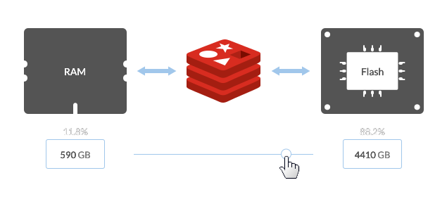

Redis Enterprise
Redis Enterprise Advantages
Redis Enterprise Node
Redis Enterprise Cluster
Active/Active Geo Distribution
Redis on Flash

Connection Architecture
Open-Source Redis
Redis Enterprise
Redis Enterprise
High Availability
Local Replication
Auto Failover
Auto Failover
Auto Failover